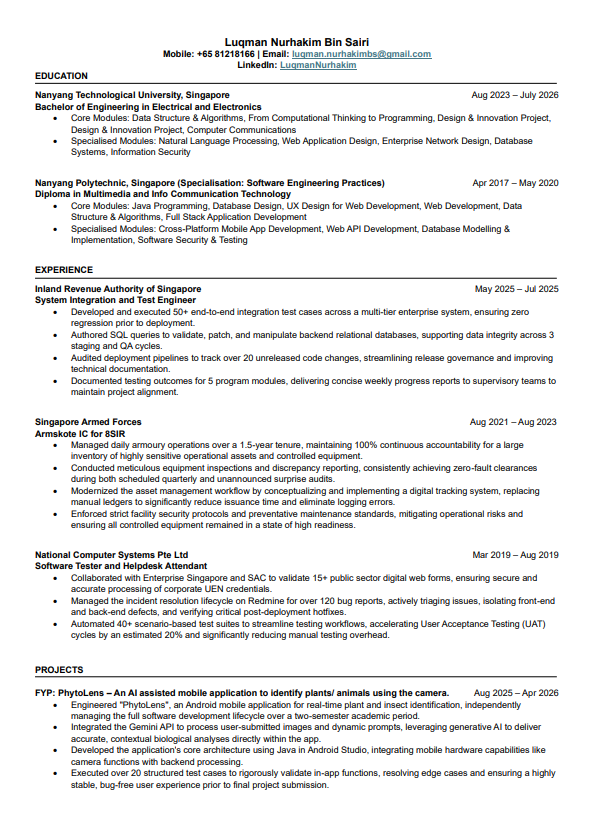
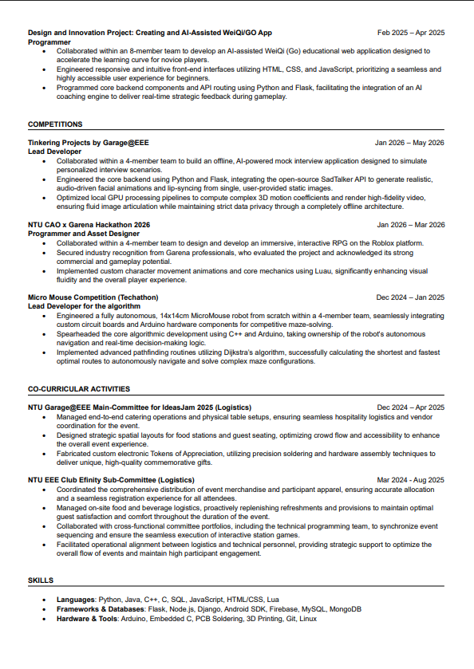

Bridging hardware logic
with scalable software systems.
I'm Luqman Nurhakim Bin Sairi, an Electrical & Electronic Engineering graduate from Nanyang Technological University (NTU). I too have a diploma in Multimedia & Info-Communication Technology (Software Engineering) from Nanyang Polytechnic.
Background & Focus
My engineering journey combines low-level systems knowledge with full-stack development. I enjoy architecting intelligent software—from training and integrating generative AI APIs (Gemini) and computer vision models into Android applications, to building autonomous pathfinding algorithms for embedded robotics.
With hands-on experience in public sector enterprise systems integration (IRAS, NCS) and team leadership across hackathons and hardware buildathons, I value reliability, clean state synchronization, and deterministic performance.
Education
-
NTUNanyang Technological University
B.Eng. in Electrical & Electronic Engineering (2023 – 2026)
Specialisations & coursework in Data Structures & Algorithms, Natural Language Processing, Web App Design, Database Systems, Computer Communications, and Information Security.
-
NYPNanyang Polytechnic
Diploma in Multimedia & InfoComm Tech (2017 – 2020)
Specialisation in Software Engineering Practices. Covered Java programming, Full-Stack development, UX design, Software Security & Testing, and Cross-Platform Mobile Apps.
Core Competencies
Languages
Multi-paradigm development across systems, scripting, and web platforms.
Frameworks & Mobile
API routing, web micro-frameworks, and native mobile development.
Databases & Testing
Relational schemas, NoSQL document stores, and test integration suites.
Hardware & Tooling
Microcontrollers, PCB fabrication, and environment toolchains.
Industry Experience
System Integration & Test Engineer
Developed and executed 50+ end-to-end integration test cases across a multi-tier enterprise system, ensuring zero regression prior to release. Authored complex SQL queries to validate, patch, and manipulate backend relational databases across 3 staging and QA cycles, while auditing deployment pipelines to track over 20 unreleased code changes.
Armskote IC
Maintained 100% continuous accountability for sensitive operational assets, achieving zero-fault clearances during scheduled and unannounced surprise audits. Modernized the armory workflow by conceptualizing and implementing a digital tracking system that replaced manual ledgers to significantly cut issuance times.
Software Tester & Helpdesk Attendant
Collaborated with Enterprise Singapore and SAC to validate 15+ public sector web forms processing corporate UEN credentials. Triaged over 120 bug reports on Redmine and automated 40+ scenario-based test suites, accelerating User Acceptance Testing (UAT) cycles by approximately 20%.
Engineering Competitions
Roblox Interactive RPG
Collaborated within a 4-member team to build an immersive RPG experience using Luau, implementing custom character movement mechanics and interactive state systems. Secured industry evaluation and recognition from Garena professionals.
Autonomous Maze-Solving Robot
Designed and built a 14x14cm autonomous MicroMouse robot utilizing Arduino hardware and custom circuit boards. Authored the autonomous pathfinding algorithm using C++ and Dijkstra's algorithm to compute the shortest, fastest optimal paths in real-time.
Offline AI-Powered Mock Interviewer
Engineered a completely offline, privacy-first AI mock interview application using Python, Flask, and the open-source SadTalker model to generate realistic, audio-driven facial lip-sync animations from single static images.
Hobbies & Interests
What keeps me energized, curious, and creative outside of daily development work.
Badminton & Athletic Drive
I play badminton recreationally to stay sharp, agile, and competitive. Having served as the Captain of the Badminton CCA back in secondary school, court discipline and team leadership formed an early foundation for how I collaborate under pressure today.
Creative AI & Fun Software
I love turning creative ideas into functional, interactive software—whether that means tinkering with multimodal generative models (Gemini API, SadTalker), prototyping novel game loops, or designing clever utilities that solve real-world and desktop problems.
AI Music & Audio Generation
I experiment with generative audio models to compose and produce music with AI. Blending algorithmic sound design, structural prompting, and digital audio workstations allows me to explore creative storytelling and sonic textures through a technical lens.
Competitions & Hackathons
I have a genuine passion for joining techathons, robotics builds, and game jams. Stepping into high-stakes, time-crunched environments pushes me to iterate rapidly, synchronize closely with teammates, and ship working solutions from scratch.
Curriculum Vitae
Click either page to enlarge. Verified record of academic background, enterprise experience, and engineering projects.

